Թեստ 60
30:00
1. Քանի՞ երթևեկության գոտիներ ունի այս ճանապարհը

2. Քանի՞ երթևեկելի մասեր ունի այս ճանապարհը
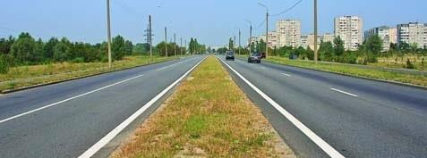
3. Տրանսպորտային միջոցների շահագործումն արգելվում է, եթե՝
4. Տրանսպորտային միջոցների շահագործումն արգելվում է, եթե՝
5. Եթե մտադիր եք կատարել աջ շրջադարձ, պարտավո՞ր եք արդյոք զիջել ճանապարհը թեթև մարդատար ավտոմոբիլին:
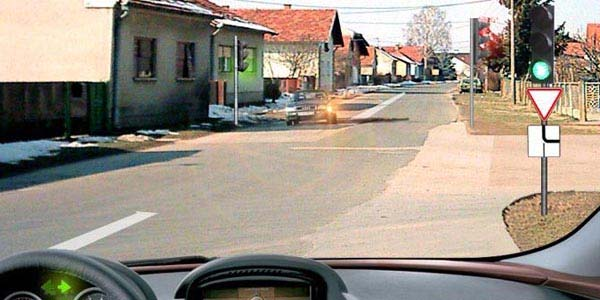
6. Ի՞նչ են ցույց տալիս նշված ճանապարհային նշանները:
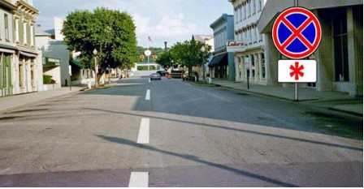
7. Ո՞ր տրանսպորտային միջոցի վարորդն ունի առաջնահերթ երթևեկության իրավունք:
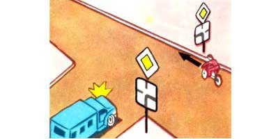
8. Ո՞ր ուղղությամբ է թույլատրվում երթևեկությունը:
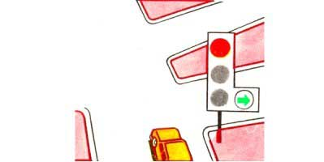
9. Կանգառն արգելվում է, եթե հոծ գծի և կանգնած տրանսպորտային միջոցի միջև տարածությունը կազմում է`
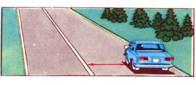
10. Տվյալ իրավիճակում
11. Այս ճանապարհային նշանը
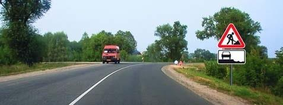
12. Կարող են արդյո՞ք միաժամանակ կատարել ձախ շրջադարձն այս խաչմերուկում
13. Այստեղ խաչմերուկը
14. Թույլատրվո՞ւմ է կայանումն այս իրավիճակում
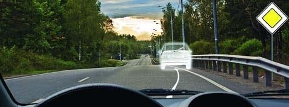
15. Մարդկանց փոխադրումը բեռնատար կցորդում`
16. Թույլատրվու՞մ է արդյոք կանաչ ավտոմոբիլի վարորդին վազանց կատարել:
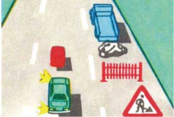
17. Ո՞ր հետագծով է թույլատրված հետադարձը
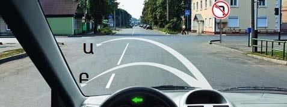
18. Գրառումը երթևեկելի մասում ցույց է տալիս
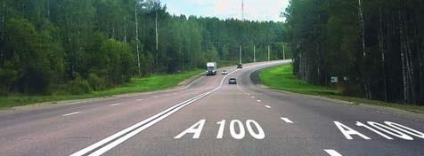
19. Ձախ շրջադարձ կատարելիս
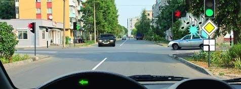